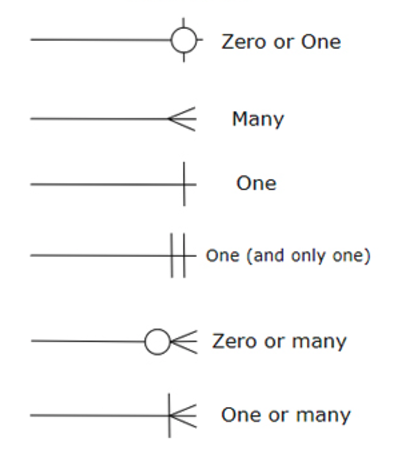

ERD (Entity-Relationship Diagram) on visuaalne tööriist, mida kasutatakse andmebaasi andmemudelite kujundamiseks.
See esindab andmebaasis hoitavate objektide ja nende omavaheliste seoste vahelisi suhteid graafiliselt.
Andmebaasi disain: ERD-d on oluline samm relatsioonandmebaasi loomisel.
Infosüsteemide planeerimine: Need aitavad määratleda süsteemi nõuded ja siduda need andmestruktuuridega.
Dokumentatsioon: ERD-d on kasulikud dokumenteerimaks olemasolevaid süsteeme.
Kommunikatsioon: IT-spetsialistid ja äripoole esindajad saavad diagrammi abil selgelt suhelda süsteemi vajadustest ja ülesehitusest.
Entiteet (Entity)
Kujund: Ristkülik
Atribuut (Attribute)
Kujund: Ovaal
Suhe (Relationship)
Kujund: Romb
Kardinaalsus (Cardinality)
Kujund: Lisamärgid joonel

Primaarvõti (Primary Key): Unikaalne identifikaator, mis määratleb iga rea tabelis.
Võõrvõti (Foreign Key): Atribuut, mis viitab teise tabeli primaarvõtmele.
Komposiitvõti (Composite Key): Mitmest atribuudist koosnev primaarvõti.